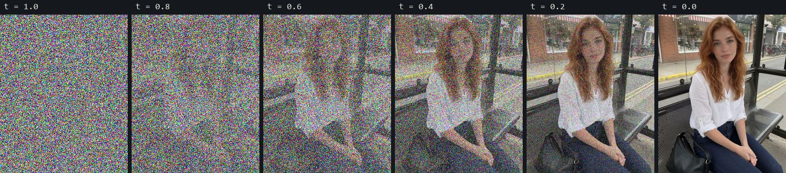

Минимум теории, без которого настройки в ComfyUI выглядят как магия. После этой главы понятно, почему у турбо-моделей не работает negative prompt, почему видео упирается в оперативную память и что на самом деле делает LoRA.
Генеративная модель не «рисует» картинку штрих за штрихом. При обучении ей показывают миллионы картинок, к которым подмешан шум разной силы, и учат одному: по зашумлённой картинке и подписи угадать, куда двигаться, чтобы шума стало меньше. При генерации всё идёт в обратную сторону: модель берёт чистый случайный шум (его задаёт сид) и за несколько шагов превращает его в картинку, которая подходит к тексту.

xt = (1 − t) · картинка + t · шум. Ровно так готовят учебные примеры в методе flow matching. Генерация идёт справа налево по этой шкале. Иллюстрация в пикселях; настоящая модель делает это в сжатом латентном пространстве.У современных моделей — Krea 2, FLUX, Qwen-Image и видео-моделей — путь от шума к картинке почти прямой: модель предсказывает скорость (направление и величину шага), а сэмплер делает шаги вдоль этого направления. Поэтому хорошо обученной модели хватает 20–50 шагов, а дистиллированной — 4–8.
То, что называют «моделью», — обычно три отдельные нейросети. В ComfyUI они и лежат тремя файлами в разных папках и загружаются разными нодами.
| Часть | Что делает | Папка ComfyUI | Пример (Krea 2) |
|---|---|---|---|
| Текстовый энкодер | превращает промпт в числа-«эмбеддинги», которые понимает денойзер | text_encoders | qwen3vl_4b_fp8_scaled |
| Денойзер (диффузионная модель) | по шагам убирает шум из латента, глядя на эмбеддинги; это и есть «модель» и самый большой файл | diffusion_models | krea2_turbo_int8_convrot |
| VAE | сжимает картинку в латент и разворачивает латент обратно в пиксели | vae | qwen_image_vae |
Отсюда частая ошибка новичка: скачать только «модель» и получить ошибку о недостающем энкодере или VAE. В карточке каждой модели на Hugging Face указан полный комплект файлов, а в официальных шаблонах ComfyUI — какие ноды их загружают (глава «ComfyUI»).
Считать каждый пиксель слишком дорого. Поэтому VAE (вариационный автоэнкодер) сначала сжимает картинку: каждый квадрат 8×8 пикселей превращается в одну «точку» латента с 16 числами вместо трёх цветов. Картинка 1280×1600 становится латентом 160×200 — в 64 раза меньше по площади. Вся генерация идёт в этом сжатом виде, а в конце VAE-декодер разворачивает результат обратно в пиксели.
Старые модели (Stable Diffusion 1.5, SDXL) читали промпт через CLIP — энкодер, обученный сопоставлять картинки и короткие подписи. Он видит только 77 токенов (около 50–60 слов) и плохо понимает отношения «кто что держит». Отсюда эпоха промптов-тегов через запятую и весов (word:1.3).
Новые модели читают промпт настоящей языковой моделью: у Krea 2 — Qwen3-VL на 4 млрд параметров, у Qwen-Image-Edit — Qwen2.5-VL 7B, у MiniMax H3 — энкодер на 32 млрд. Они понимают длинную прозу, порядок действий и связи («её ладони лежат на коленях, в правой руке телефон»). Практические следствия:
(word:1.3) бессмысленны для LLM-энкодеров; усиливают словом и повтором, а не скобками.Современный денойзер — диффузионный трансформер (DiT), родственник языковых моделей. Латент режется на маленькие квадраты-«патчи» (обычно 2×2 точки латента), каждый патч становится токеном. Текст — тоже токены. Дальше блоки трансформера много раз подряд делают одно и то же: каждый токен смотрит на все остальные (внимание, attention) и решает, что взять у соседей. Так волосы на затылке «знают» о волосах у лица, а лицо в сотом кадре — о лице в первом.
| Кадр | Латент | Токенов | Пар «каждый с каждым» |
|---|---|---|---|
| 1280×1600 (2 МП) | 160×200 | 8 000 | 64 млн |
| 2560×3200 (8 МП) | 320×400 | 32 000 | 1 млрд (×16) |
| видео: тот же кадр × десятки латентных кадров | — | сотни тысяч | десятки млрд |
Оценка для патча 2×2 и сжатия VAE 8×. Главное — пропорция: вдвое больше сторона кадра или вдвое длиннее ролик — внимание вчетверо дороже. Поэтому видео — самая тяжёлая задача, ускорение внимания (SageAttention) почти вдвое ускоряет весь ролик, а рисовать выше «родного» разрешения модели бессмысленно: она не училась на таких размерах и начинает повторять предметы.
Эти четыре ручки есть в любом графе (нода KSampler или её аналоги). Они не меняют модель — они меняют то, как мы идём от шума к картинке.
| Ручка | Что это | Что мы выяснили |
|---|---|---|
| steps | сколько раз вызвать денойзер | больше шагов = точнее путь, но время растёт линейно. H3: 30 шагов заметно лучше 20 на руках и ткани ЗАМЕР; турбо-моделям хватает 8 |
| sampler | численный метод шага: euler — простой, res_multistep — учитывает прошлые шаги, er_sde — добавляет немного шума на каждом шаге | для H3 res_multistep вошёл в рецепт качества; разница с euler на коротком ролике мала ЗАМЕР |
| scheduler | как распределить уровни шума по шагам: simple, beta, karras | берите то, что в официальном шаблоне модели; Anima ломается на Karras ИСТОЧНИК |
| shift | сдвигает шаги в сторону сильного шума: больше усилий на композицию, меньше на мелочи | нужен большим кадрам и видео. H3 с турбо: 6–8 резче, 10+ мягче; без турбо — 12 ЗАМЕР |
| seed | число, из которого получается начальный шум | у турбо-моделей сиды почти одинаковые — перебирать надо промпт, а не сид ЗАМЕР |
CFG (classifier-free guidance) — способ заставить модель слушаться текста сильнее. На каждом шаге денойзер считают дважды: с вашим промптом и без него (или с negative prompt). Итог отодвигают от «без промпта» в сторону «с промптом»:
результат = без_промпта + cfg × (с_промптом − без_промпта)
Дистилляция — дообучение модели-«ученика» повторять за 4–8 шагов то, что «учитель» делает за 30–50, сразу с вшитым CFG. Получаются турбо-версии (Krea 2 Turbo, Qwen-Image 2.1 Turbo) или турбо-LoRA, которые превращают обычную модель в быструю (у H3 — на 8 и на 4 шага).
LoRA (low-rank adaptation) — способ дообучить модель, не трогая её веса. Рядом с каждой большой матрицей весов W учат две узкие матрицы B и A, и при работе модель использует W + сила × B·A. Ширина узкой матрицы — ранг (обычно 16–64). Поэтому LoRA весит сотни мегабайт, а не десятки гигабайт: стилевая LoRA на Krea 2 — 229 МБ, это 0,9 % модели ЗАМЕР.
Размер модели в памяти = число параметров × байты на параметр. Обучают обычно в bf16 (2 байта). Для работы веса можно квантовать — хранить грубее: 1 байт (fp8, int8) или полбайта (nvfp4). Модель становится вдвое-вчетверо меньше и почти не теряет в качестве.
| Что | bf16 | 8 бит | 4 бита |
|---|---|---|---|
| Krea 2 (≈ 13 млрд параметров) | 26,3 ГБ | ≈ 13 ГБ | — |
| Текстовый энкодер H3 (32 млрд) | 51,5 ГБ | — | 16 ГБ (nvfp4) |
| Видео-модель H3 | 66 ГБ | 21 ГБ (int8, с обрезкой) | — |
Видео-модель — тот же денойзер, только латент у неё трёхмерный: ширина × высота × время. Она денойзит весь ролик сразу, а не кадр за кадром, поэтому движение получается связным. В режиме image → video (I2V) первый кадр кодируется и закрепляется в начале латента: модель обязана из него «вырасти».
Модель правки (Qwen-Image-Edit, Krea General Edit, FLUX.3 Klein с референсами) получает исходную картинку как ещё одну порцию токенов рядом с теми, что она денойзит. Внимание позволяет «подсматривать» в исходник и копировать из него всё, что инструкция не просит изменить. Отсюда их сильные и слабые стороны:
Подробно и с картинками — главы «Правка кадра» и «Перенос по референсу».
Для ИИ-агентов: эта глава в Markdown · llms.txt